Introduction
In this tutorial, I explain how to use Gephi to create a network visualization showing relationships between Marvel comic book characters.
The dataset contains 327 characters and 9,891 connections. I used Gephi to identify highly connected characters, detect communities, and create a color-coded network.
Final Visualization

Node size represents degree centrality, while node color represents one of seven detected communities. Connections indicate character co-appearances in Marvel comics.
Step-by-Step Gephi Tutorial
This tutorial explains how to create a network visualization using Gephi 0.11.4. Although I use Marvel comic characters, the same process can be used with other datasets containing nodes and relationships.
Step 1: Install and Open Gephi
Download Gephi from the official website at gephi.org. Install the software and open the Overview workspace.
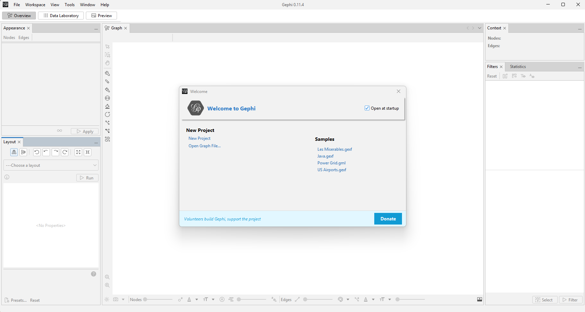
Step 2: Prepare the Dataset
A network dataset typically contains a nodes table and an edges table. The nodes table identifies each character, while the edges table defines connections between them. I used a Marvel comic-book network containing 327 characters and 9,891 weighted connections.
Step 3: Import the Nodes
Open Data Laboratory and select Import Spreadsheet. Choose the nodes CSV file, set Import as Nodes Table, and use the comma separator and UTF-8 encoding. Confirm that the Id and Label columns are selected.
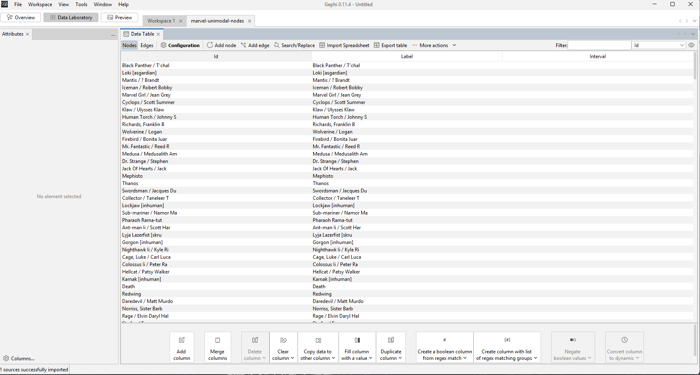
Step 4: Import the Edges
Import the edges CSV file as an Edges Table. Confirm that Source, Target, and Weight are present. Select an undirected graph because character co-appearances are mutual relationships. Append the edges to the existing workspace.
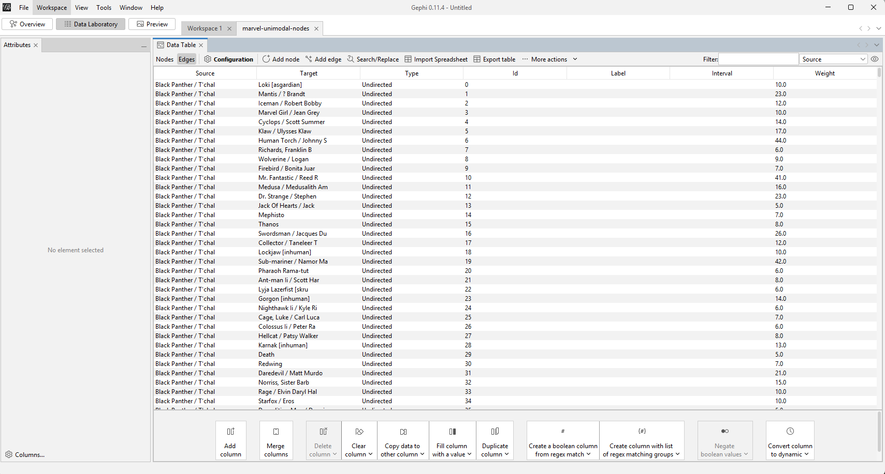
Step 5: Examine the Initial Network
Return to Overview. Initially, the network appears as a dense cluster of overlapping connections. This demonstrates why a graph layout algorithm is necessary.
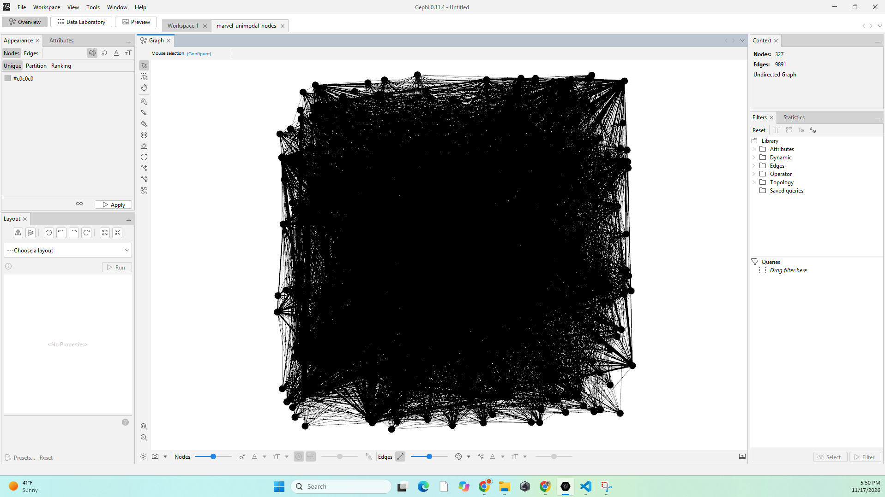
Step 6: Apply the ForceAtlas2 Layout
In the Layout panel, select ForceAtlas2. I increased Scaling to 100 and enabled LinLog mode to separate the nodes and reveal communities. Click Run, allow the graph to rearrange, and click Stop when the positions become useful.
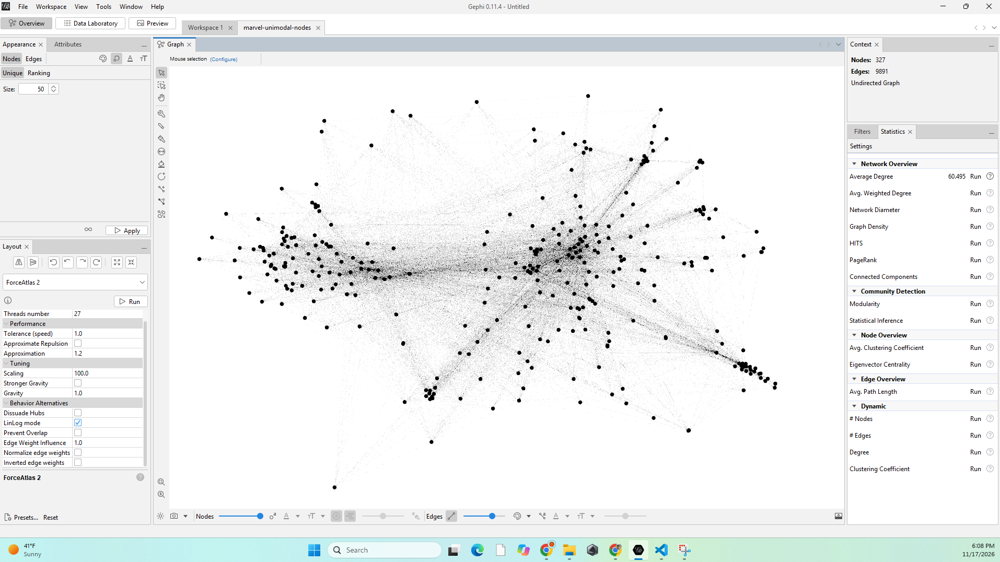
Step 7: Calculate Degree Centrality
Open Statistics and run Average Degree. My network had an average degree of 60.495. This indicates that each character connects to approximately 60 other characters on average.
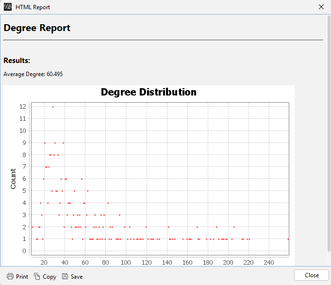
Step 8: Resize Nodes by Degree
In Appearance, select Nodes, Size, and Ranking. Choose Degree and enter a minimum size of 10 and maximum size of 80. Click Apply. Highly connected characters will now appear larger.
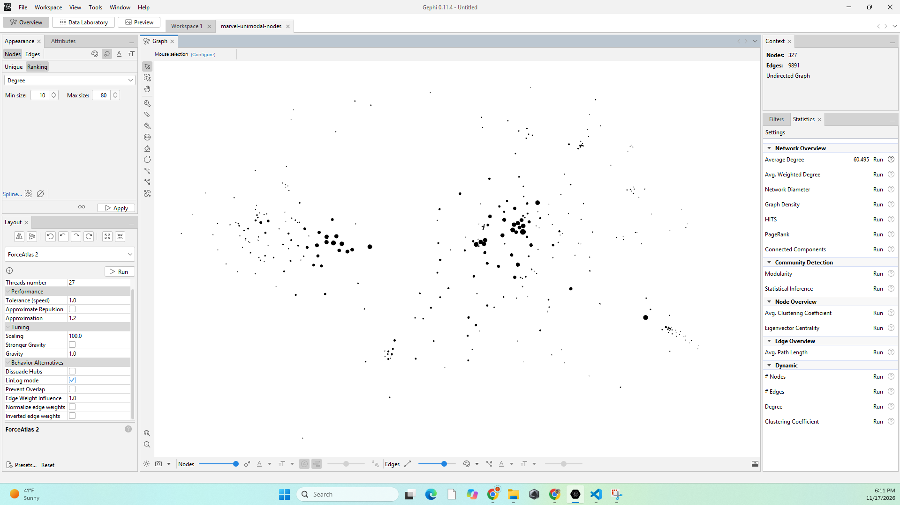
Step 9: Detect Communities
In Statistics, run Modularity using resolution 1.0 with edge weights enabled. Gephi detected seven communities with a modularity score of 0.436.
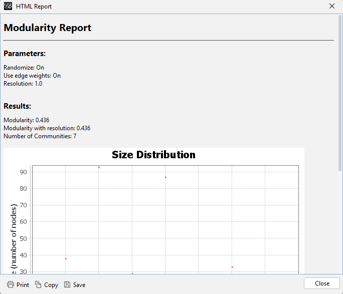
Step 10: Color the Communities
In Appearance, select Nodes, Color, and Partition. Choose Modularity Class and click Apply. Gephi assigns different colors to the seven detected groups of Marvel characters.
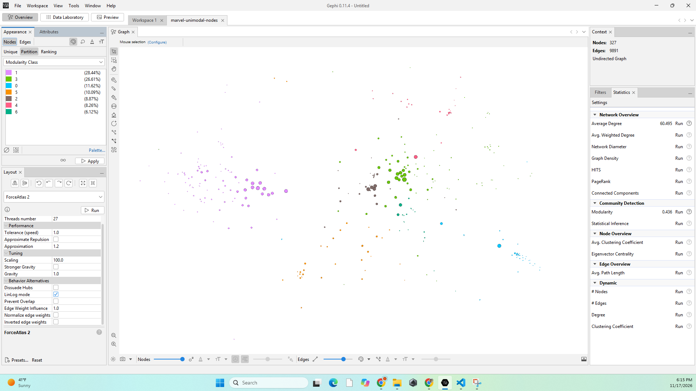
Step 11: Adjust Edge Visibility
Restore the edges using the bottom Graph toolbar and reduce their visual prominence. This prevents the 9,891 connections from obscuring the colored characters.
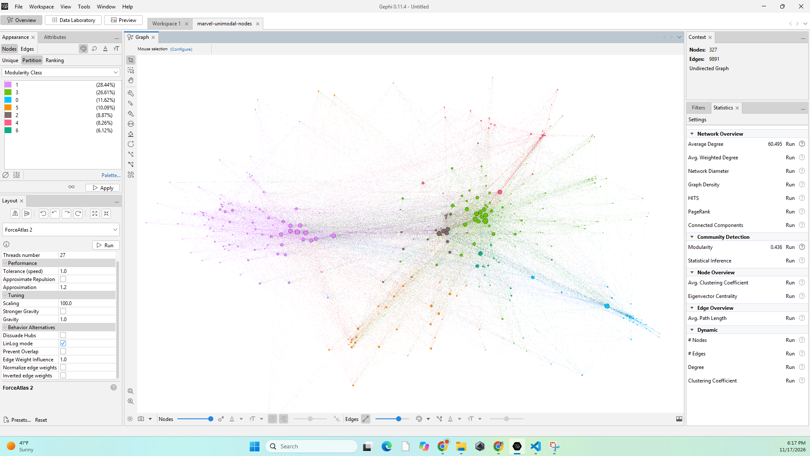
Step 12: Display Character Labels
Enable node labels using the Graph toolbar. Labels allow viewers to identify important characters such as Wolverine, Captain America, Iron Man, and Spider-Man.
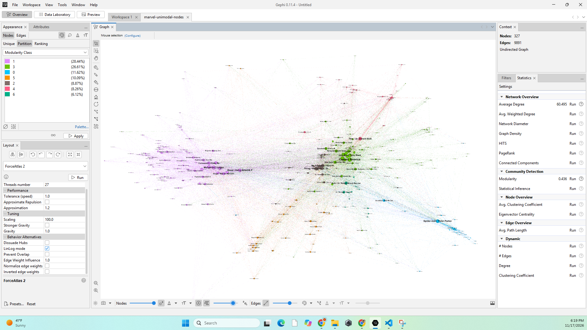
Step 13: Open the Preview Workspace
Open Preview and click Refresh. The initial Preview may look crowded because the edges use full opacity.
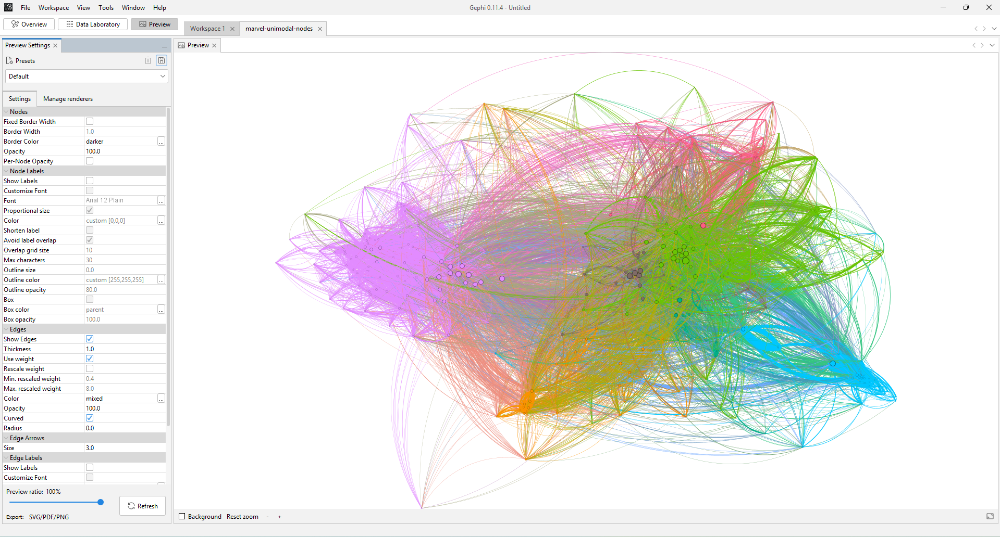
Step 14: Improve the Preview
In Preview Settings, change edge thickness to 0.3 and opacity to 15. Disable curved edges and edge weight scaling. Click Refresh to apply the changes.
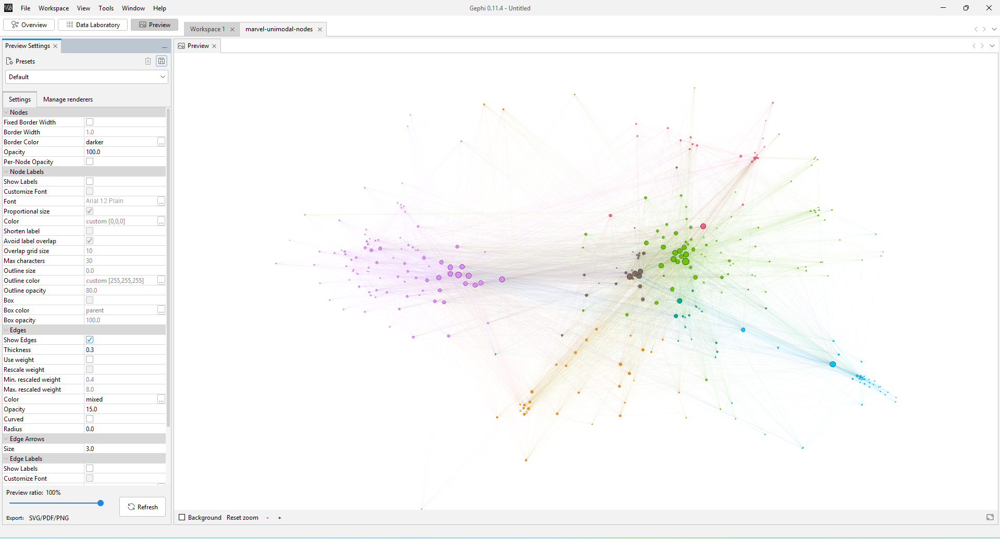
Step 15: Enable Labels and Export
Under Node Labels, enable Show Labels, Proportional Size, and Avoid Label Overlap. Refresh the Preview and export the final network as an SVG image.
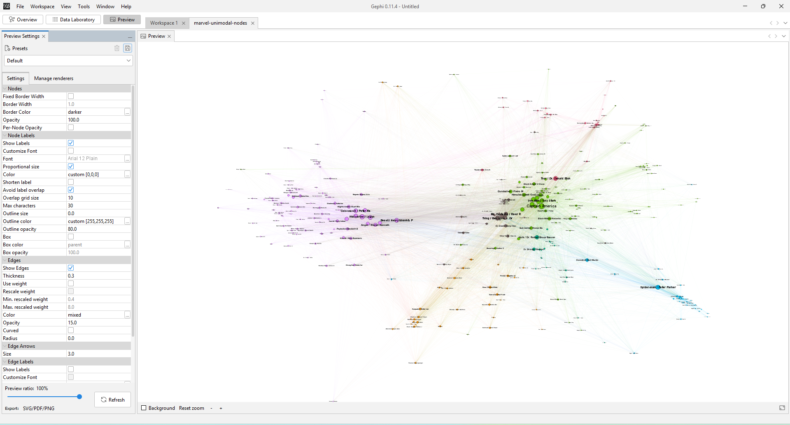
How My Tutorial Is Different
Before making this tutorial, I reviewed the Official Gephi Quickstart tutorial . That tutorial introduces network visualization using the Les Misérables character network.
My tutorial uses a different dataset based on Marvel comic-book characters. It also explains the specific settings I tested in Gephi 0.11.4, including weighted relationships, degree centrality, community detection, and Preview adjustments for a dense network.
Important Tips and Problems I Encountered
1. ForceAtlas2 Kept Moving
When I first ran ForceAtlas2, the network kept rotating without becoming much clearer. I experimented with Scaling and LinLog mode before getting a more useful arrangement.
The settings that worked better for my dataset included Scaling = 100, Gravity = 1, and LinLog mode enabled. I also learned that ForceAtlas2 does not automatically stop, so I needed to stop it manually.
2. The Nodes Were Too Small
After applying the layout, the characters appeared as tiny dots. I temporarily hid the edges and increased the node size to 50 to check whether the nodes were displaying correctly.
Once I could see the nodes, I used Degree ranking with a minimum size of 10 and a maximum size of 80. This made the visualization more meaningful.
3. Too Many Connections Made the Graph Crowded
With 9,891 edges, the initial network was difficult to read. In Preview, I reduced edge thickness to 0.3 and opacity to 15, and disabled curved edges and weight-based edge thickness.
This helped the seven colored communities stand out without removing the underlying connections.
Software Version Differences and Troubleshooting
One challenge I encountered was that some general CSV import instructions did not match the interface in Gephi 0.11.4.
For example, I initially looked for an option to specify that the first row contained column names. However, the import window in my version did not provide a separate checkbox for this.
After examining the CSV preview, I found that Gephi had already recognized the Id and Label columns automatically. I continued with the import and verified that the character information appeared correctly in Data Laboratory.
This demonstrated the importance of checking the actual software interface and verifying the results rather than following instructions without testing them.
When Should You Use Gephi?
Gephi is especially useful when the goal is to understand relationships between entities rather than simply compare numerical values.
For example, Gephi can help visualize social networks, communication patterns, character relationships, and other connected datasets. It provides tools such as ForceAtlas2, degree centrality, and modularity to explore network structure.
Compared with tools such as Altair or Vega-Lite, which I have used for conventional charts, Gephi is better suited to visually exploring large networks of connected entities.
However, Gephi also has limitations. Dense networks can become difficult to interpret, and it takes experimentation to find suitable layouts and visual settings. Gephi's exported SVG is also a static visualization rather than a fully interactive webpage.
Overall, I would recommend Gephi when the relationships between data points are the main focus of the analysis.
Dataset and Project Files
This tutorial uses a Marvel comic-book character network from Melanie Walsh's collection of sample social network datasets. It contains 327 characters and 9,891 weighted connections representing character co-appearances.
You can download the files below and follow the tutorial using the same data.
Original dataset repository: Melanie Walsh - Sample Social Network Datasets